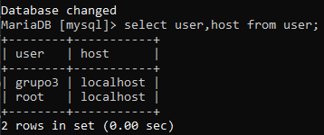

Para el diseño de la base de datos, en la cual hemos tenido que reflejar los módulos de ASIR, hemos tenidos que tener en cuanta los siguiente parámetros
Una vez conocidos los parámetros a tener en cuanta pasaremos a diseñar el esquema entidad-relación. A simple vista podemos apreciar que tendremos las entidades profesores, módulos, alumnos, cursos y aulas, con sus correspondientes débiles.
Como se aprecia, se cubren todos los aspectos propuestos a la hora de diseñar el esquema entidad-relación. Pasado su revisión, precedemos a pasarlo a modelo relacional para su posterior implementación y creación de la base de datos.
Ahora pasamos a crear la base de datos llamada raspberry3:
Lo hacemos con el comando create database

Para crear un usuario en MySQL que tenga la capacidad de manipular sólo la base de datos raspberry3 ejecutamos la siguiente instrucción:
Hacemos un select a la tabla user de mysql para comprobar que se ha creado correctamente
Para crear las tablas, columnas y meter los datos, se hace igual que en Oracle, solo que las restricciones (constraint) se ponen al final, veamos un ejemplo:

Para visualizar las tablas que vamos creando, ejecutamos show tables; y si queremos ver las columnas de una tabla ejecutamos describe seguido del nombre de la tabla
Para crear vistas de las consultas que vamos haciendo, lo hacemos con CREATE VIEW nombre_vista AS [INSTRCUCCIÓN SELECT]
Si volvemos a ejecutar show tables; vemos cómo la vista ahora sale como una tabla más, y, por último, para ver el contenido de la vista ejecutamos SELECT * from nombre_vista
Por último, para comprobar que sólo se puede acceder a base de datos desde el servidor, ejecutamos el comando nmap 192.168.50.66 -p3306, con el parámetro -p le estamos diciendo que nos de información sólo del puerto 3306 que es el puerto donde corre mysql: